.
|
Budowa - Działanie . Ogniwo Peltiera to dwie ceramiczne płytki z umieszczonymi pomiędzy nimi małymi kosteczkami wykonanymi z odpowiednich substancji. Z takiej płytki wyprowadzone są dwa przewody, do których podłącza się zasilanie, plus i minus. Po podłączeniu zasilania zaczyna ona transportować ciepło z jednej strony na drugą, przez co, strona, z której ciepło jest zabierane, staje się zimna, a strona, na którą ciepło jest transportowane, staje się gorąca. Naszym zadaniem jest jak najszybciej i jak najskuteczniej owo ciepło z gorącej strony odbierać, dzięki czemu, zwolni się miejsce na kolejne porcje ciepła sprowadzone przez Ogniwo Peltiera z jego zimnej strony. Odbiór ciepła realizujemy za pomocą radiatora, który oddaje ciepło do otoczenia (powietrza), lub bloku wodnego, który odbiera ciepło za pomocą chłodnej cieczy. Zaniedbywanie tego aspektu jest najczęstszą przyczyną niepowodzeń początkujących. Mrozi !!! Mrozi !!! :D Nie mrozi !?!? :( Parzy !!! Potem zdziwienie wielkie, że ogniwo pod wpływem temperatury się rozlutowało :P Poniższa grafika prezentuje Moduł-Ogniwo Peltiera. . |01| 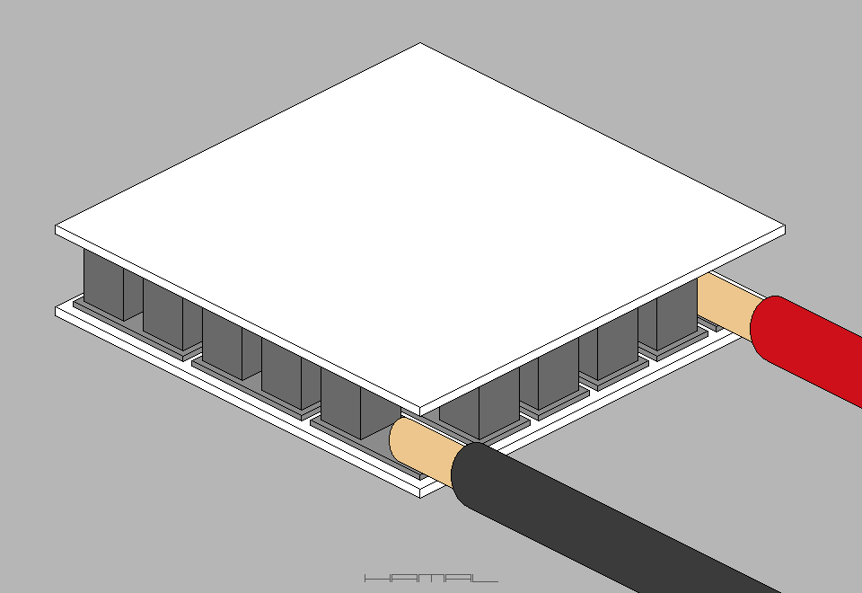 Poniższa grafika prezentuje budowę Modułu-Ogniwa Peltiera. . |02| | animacja GIF | 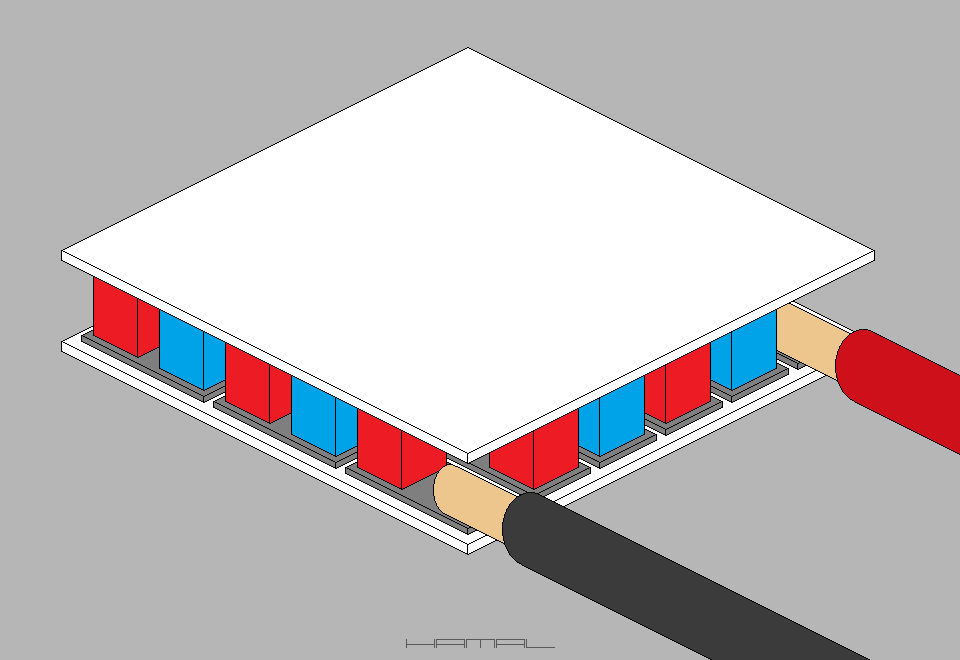 Wspomniane kosteczki są dwojakiego rodzaju (półprzewodnik typu n i typu p), są ułożone parami naprzemiennie, a pary połączone szeregowo (w rzędzie). . |03| 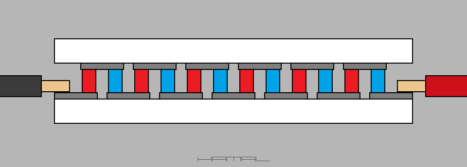 Na potrzeby niniejszego poradnika będziemy posługiwać się poniższym uproszczonym przekrojem Modułu-Ogniwa Peltiera. . |04|  Gdy podłączymy zasilanie, to ciepło z jednej strony jest transportowane na stronę drugą ... . |05| 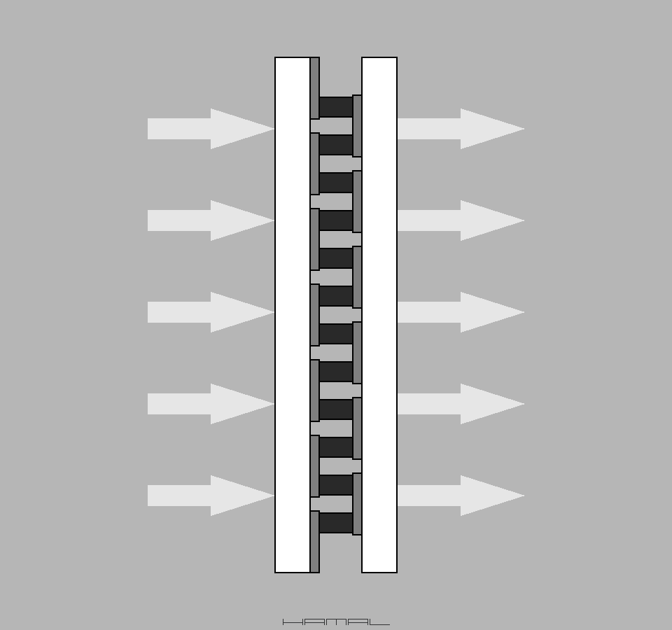 ... w wyniku czego, strona, z której ciepło jest zabierane, staje się zimna, a strona, na którą ciepło jest transportowane, staje się gorąca. . |06| 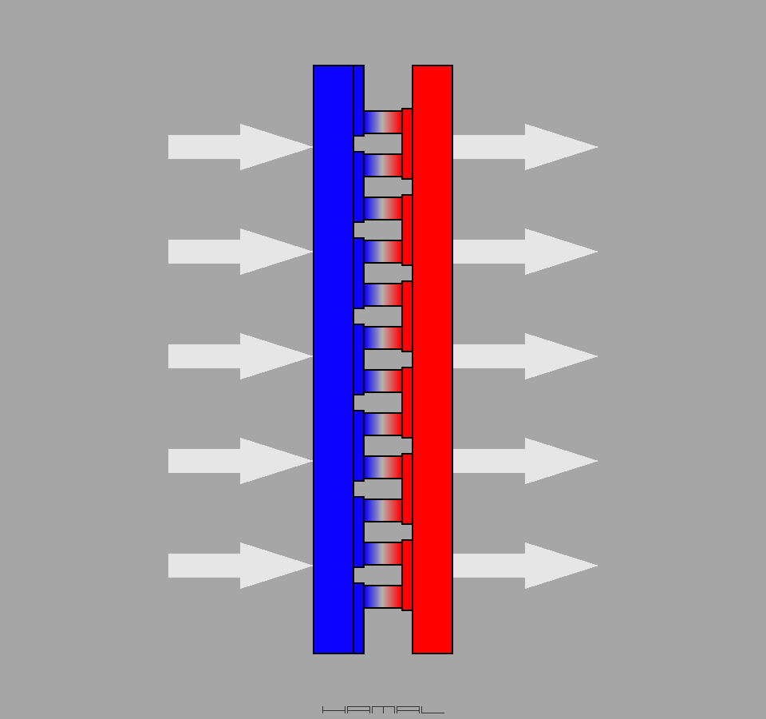 Poniższa animacja prezentuje przekrój Modułu-Ogniwa Peltiera oraz rozkład temperatur po jego podłączeniu do zasilania. . |07| | animacja GIF | 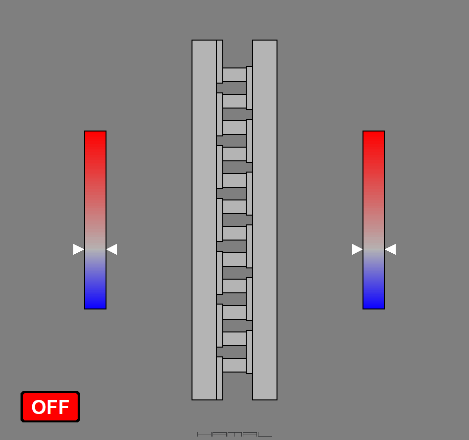 . Ale nie jest tak różowo, jak to prezentuje powyższa animacja, ponieważ ciepło po prawej (gorącej) stronie trzeba gdzieś rozproszyć. Naszym zadaniem jest jak najszybciej i jak najskuteczniej owo ciepło ze strony gorącej odbierać, dzięki czemu zwolni się miejsce na kolejne porcje ciepła sprowadzone przez Ogniwo Peltiera z jego zimnej strony, w innym wypadku, układ się zadławi i przegrzeje, co prezentuje poniższa animacja prezentująca rozkład temperatur w przypadku braku radiatora odbierającego ciepło po gorącej stronie. . |08| | animacja GIF | 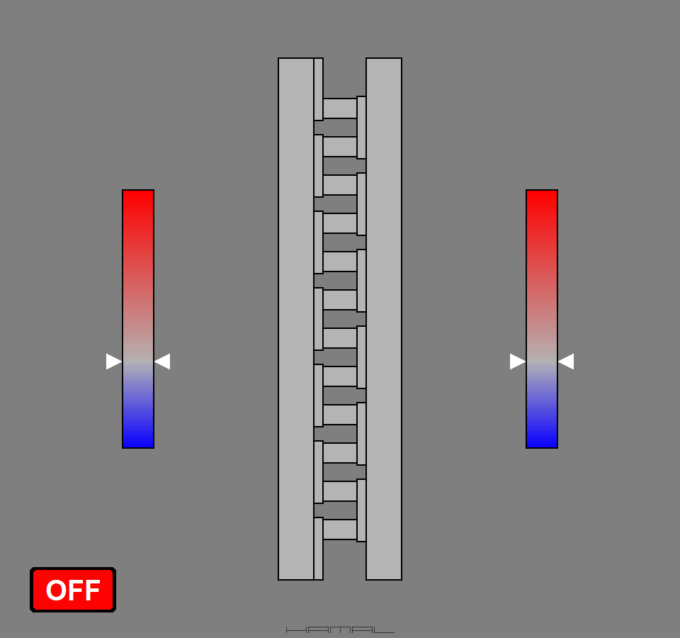 . Jest to klasyczny przypadek, gdy amator (na próbę), podłącza zasilanie licząc, że jakoś to będzie, koniecznie chcąc poczuć występujący efekt chłodzenia Poniższa grafika prezentuje przekrój Modułu-Ogniwa Peltiera z zamontowanym radiatorem. . |09| 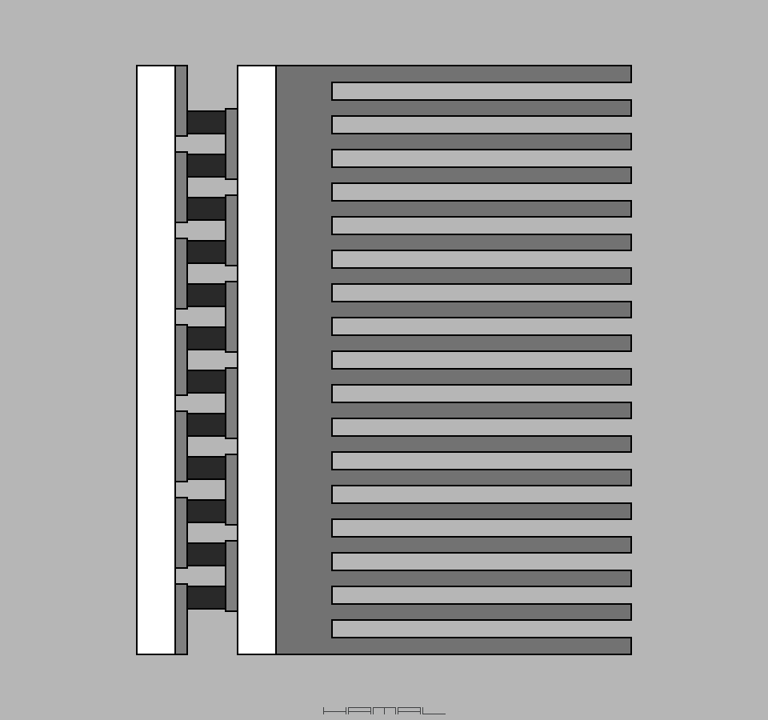 Poniższa animacja prezentuje przekrój Modułu-Ogniwa Peltiera z zamontowanym radiatorem oraz rozkład temperatur po uruchomieniu. . |10| | animacja GIF | 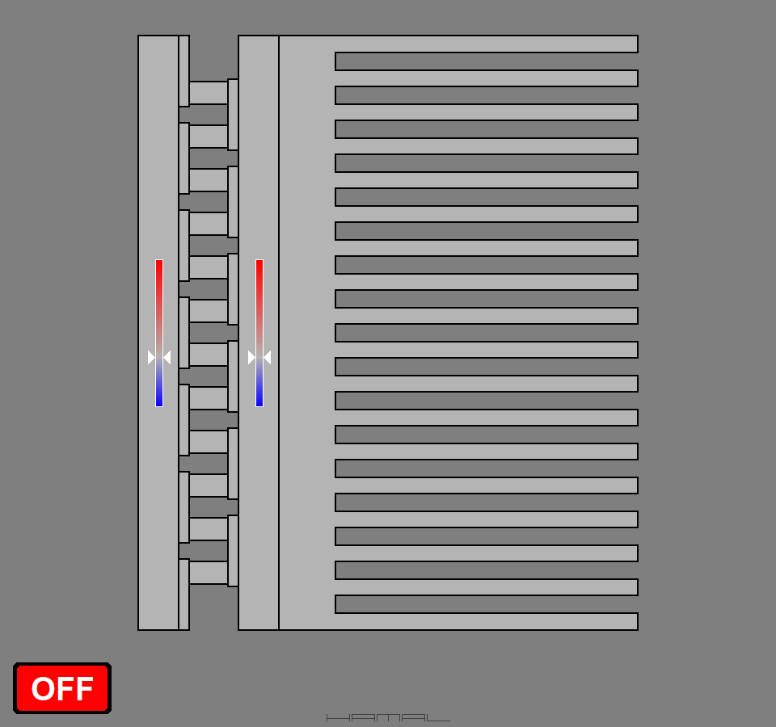 . Widzimy, że po osiągnięciu mocy maksymalnej, spadek temperatury po stronie zimnej zatrzymuje się, jednak z uwagi na skuteczne rozpraszanie ciepła przez radiator po stronie gorącej, dalsze zmiany w rozkładzie temperatur nie zachodzą, układ się stabilizuje. Oczywiście wymagany jest dostatecznie skuteczny radiator, inaczej po jego przegrzaniu, nastąpi powolna utrata sprawności układu i podniesienie temperatury strony zimnej. Jak już wspomniałem, Ogniwo Peltiera jedną stroną pożera ciepło i przesyła je na drugą stronę, gdzie trzeba je zabrać dalej. To jak bardzo uda się obniżyć temperaturę zimnej strony ogniwa, w dużym stopniu zależy od tego, jaką temperaturę posiada jego ciepła strona. Nawet najskuteczniejszy odbiór ciepła z ciepłej strony Ogniwa Peltiera ma swoje ograniczenia, wymyślono więc, aby dodać tam kolejne Ogniwo Peltiera i sprawić, że po ciepłej stronie pierwszego Ogniwa Peltiera, będzie jeszcze chłodniej, ponieważ drugie Ogniwo Peltiera wszystko natychmiast poda dalej, wtedy zimna strona pierwszego Ogniwa Peltiera, mając gdzie pchać kolejne porcje ciepła, stanie się jeszcze zimniejsza, a tym samym, jeszcze mocniej obniży temperaturę. Takie połączenie Ogniw Peltiera nazywa się kaskadowym. Można łączyć ze sobą nawet kilka Ogniw, pamiętać jednak należy, że im chłodniejsza staje się (dzięki temu) zimna strona pierwszego Ogniwa Peltiera, tym bardziej gorąca staje się ciepła strona ostatniego Ogniwa Peltiera, i tym skuteczniejszy musi być system chłodzenia, bo trzeba całe to nagromadzone ciepło natychmiast skutecznie gdzieś zabrać. Poniższa agrafika prezentuje dwa Moduły-Ogniwa Peltiera połączone ze sobą kaskadowo. . |11| 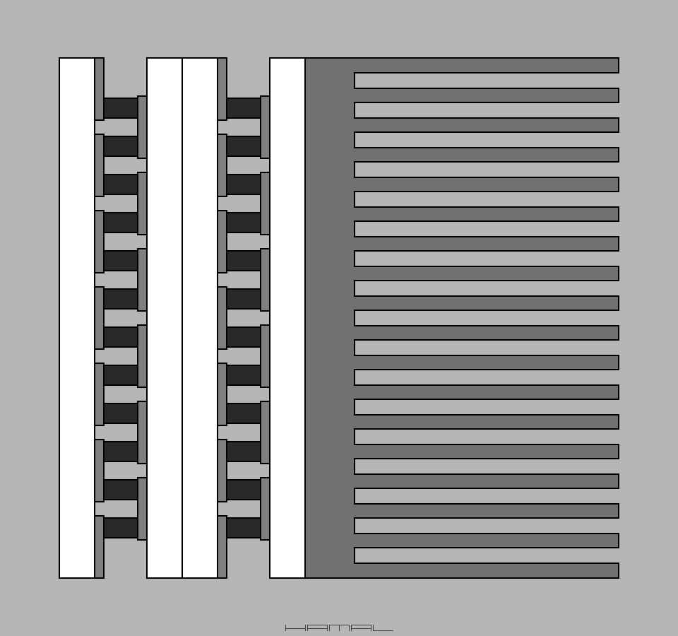 Poniższa animacja prezentuje dwa Moduły-Ogniwa Peltiera połączone ze sobą kaskadowo oraz rozkład temperatur. Dla przejrzystości animacji pominięto radiator. Wskazane temperatury stanowią jedynie uproszczony przykład. . |12| | animacja GIF | 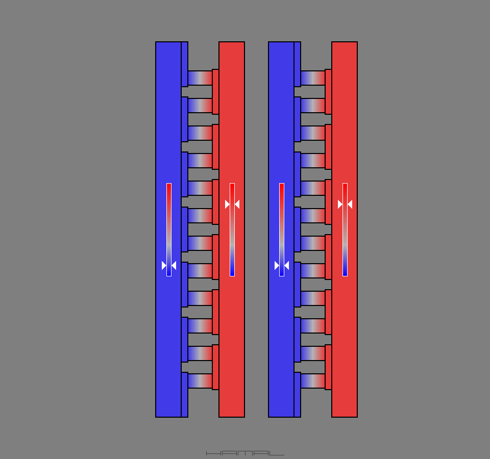 . Jak widzimy, dzięki dodaniu drugiego ogniwa, po zimnej stronie pierwszego ogniwa uzyskaliśmy jeszcze niższą temperaturę ostateczną. Odbyło to się oczywiście kosztem wyższej temperatury po gorącej stronie drugiego ogniwa, ale nie ma nic za darmo. Aby jeszcze bardziej obniżyć temperaturę po zimnej stronie ogniwa pierwszego, dodajmy jeszcze jedno ogniwo do zestawu. Poniższa animacja prezentuje trzy Moduły-Ogniwa Peltiera połączone ze sobą kaskadowo oraz rozkład temperatur. Dla przejrzystości animacji pominięto radiator. Wskazane temperatury stanowią jedynie uproszczony przykład. . |13| | animacja GIF | 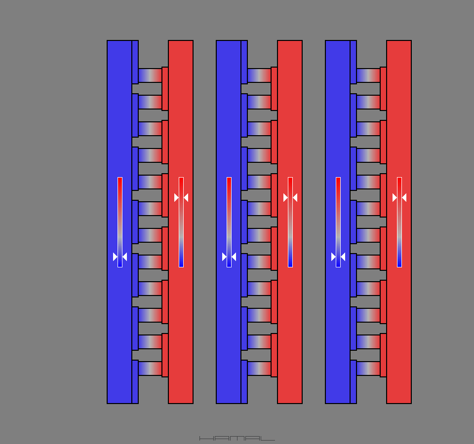 Jednak łączenie kaskadowe odrębnych Ogniw powoduje straty w miejscu łączenia ... . |14| | animacja GIF | 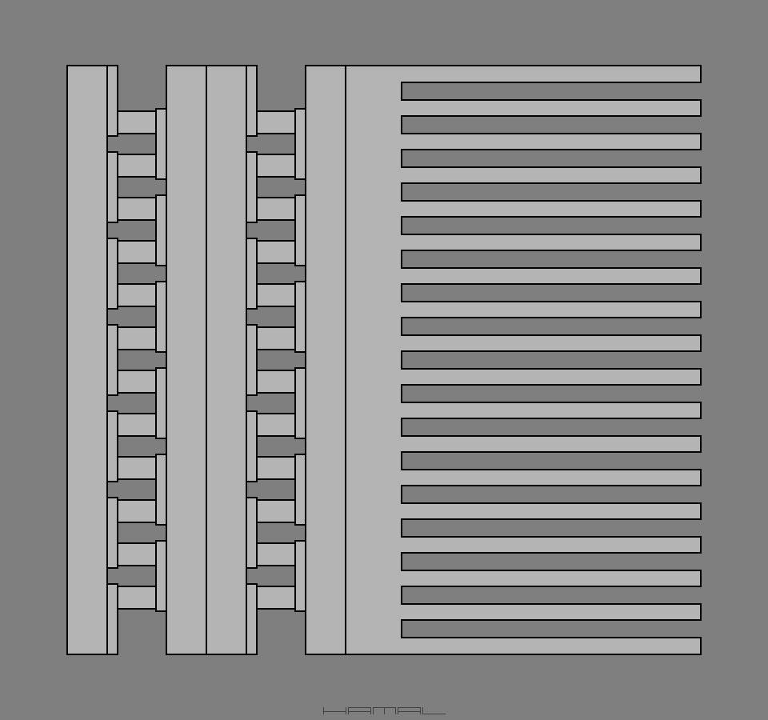 ... dlatego wytwarza się gotowe zestawy z częścią wspólną ... . |15| | animacja GIF | ... dodatkowo, zestawy takie posiadają każdy kolejny stopień większy od poprzedniego, ponieważ musi on obsłużyć ciepło poprzednika oraz własne. . |16| | animacja GIF | 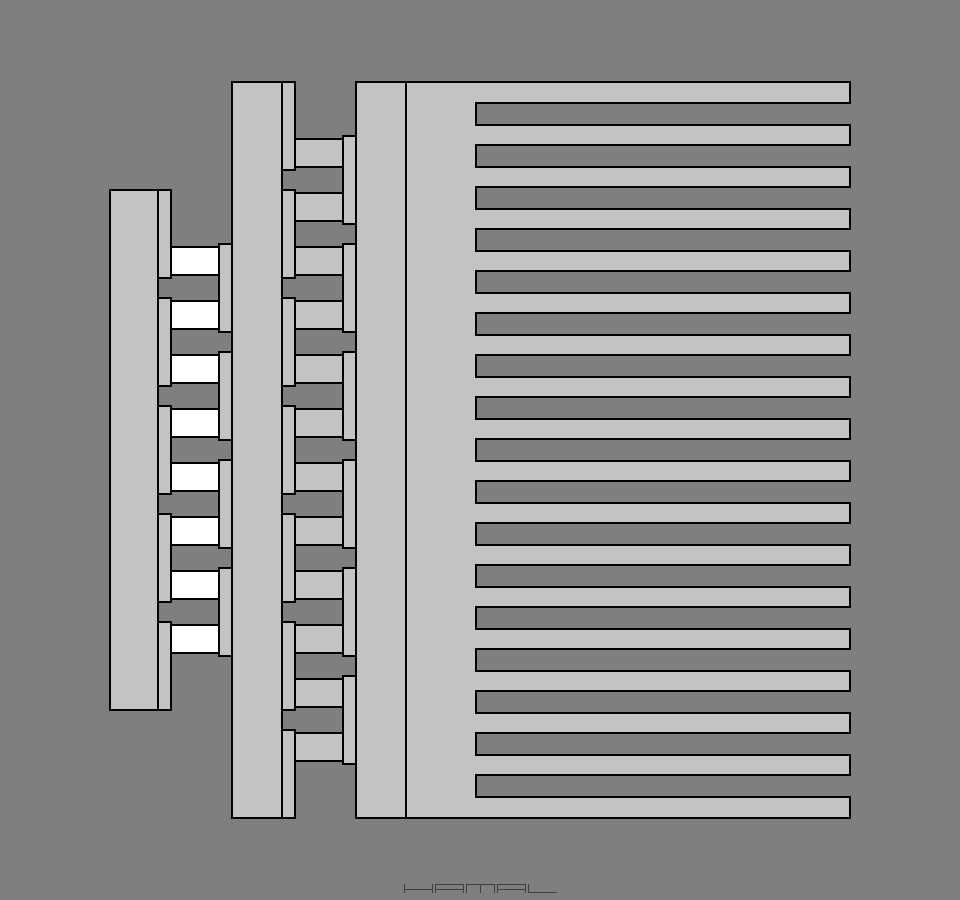 Poniższa grafika prezentuje przekrój kaskadowego (dwupiętrowego) Modułu-Ogniwa Peltiera. . |17| 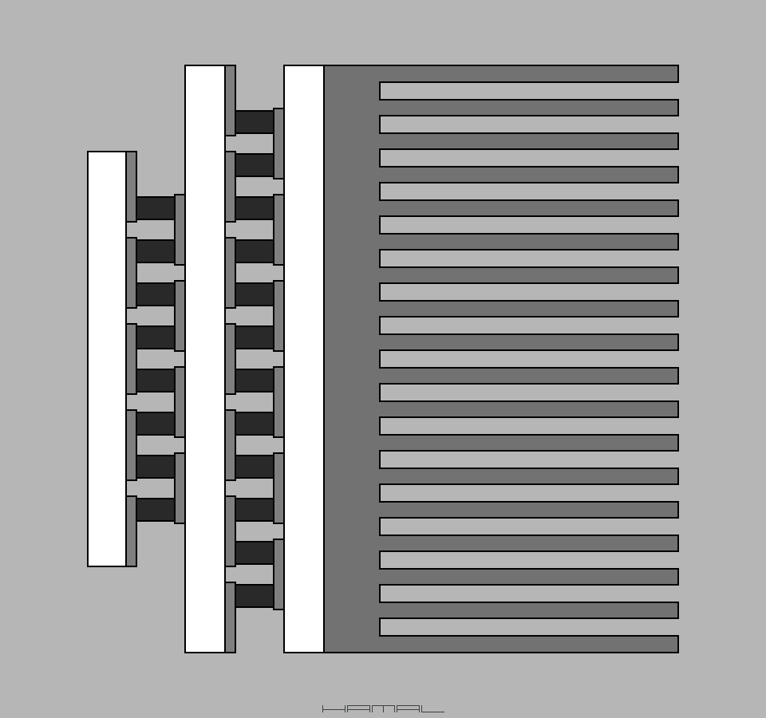 Poniższa animacja prezentuje przekrój kaskadowego (dwupiętrowego) Modułu-Ogniwa Peltiera oraz rozkład temperatur. . |18| | animacja GIF | 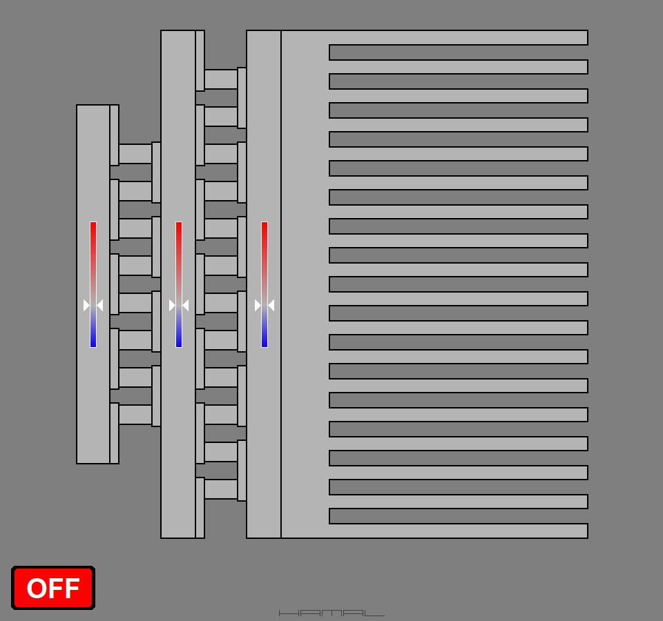 Poniższa grafika prezentuje przekrój kaskadowego (trzypiętrowego) Modułu-Ogniwa Peltiera. . |19|  Każdy kolejny stopień jest większy od poprzedniego, ponieważ musi on obsłużyć ciepło poprzedników oraz własne. . |20| | animacja GIF | 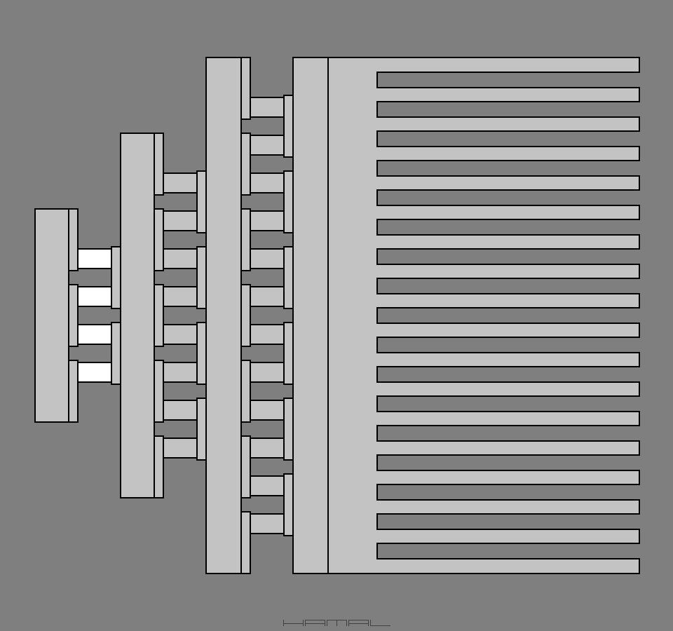 Poniższa animacja prezentuje przekrój kaskadowego (trzypiętrowego) Modułu-Ogniwa Peltiera oraz rozkład temperatur. . |21| | animacja GIF | 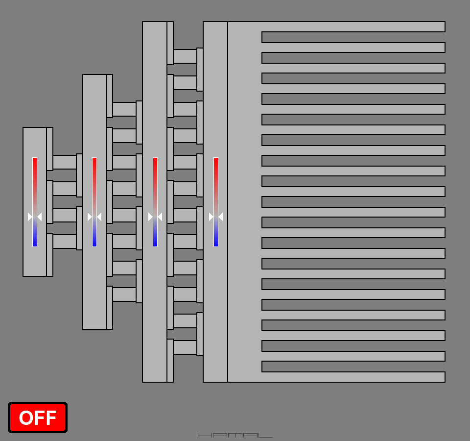 Inna forma prezentacji :) . |22| | animacja GIF | 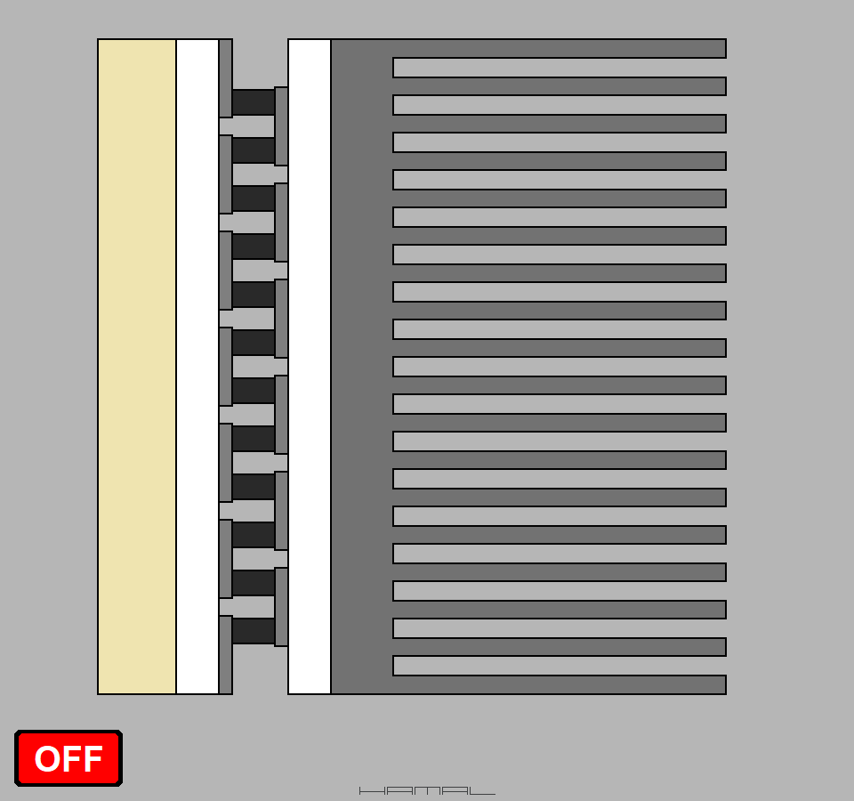 Mam nadzieję, że wiedza zawarta w niniejszym poradniku przyda się w zrozumieniu opisywanych tu układów :) 
|